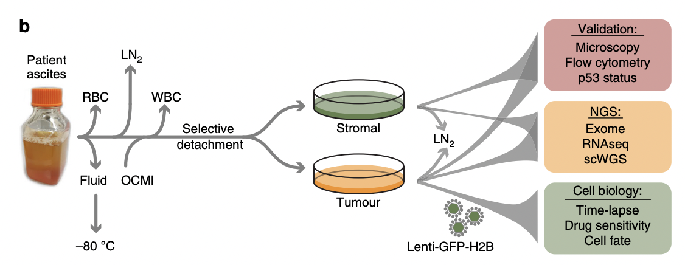
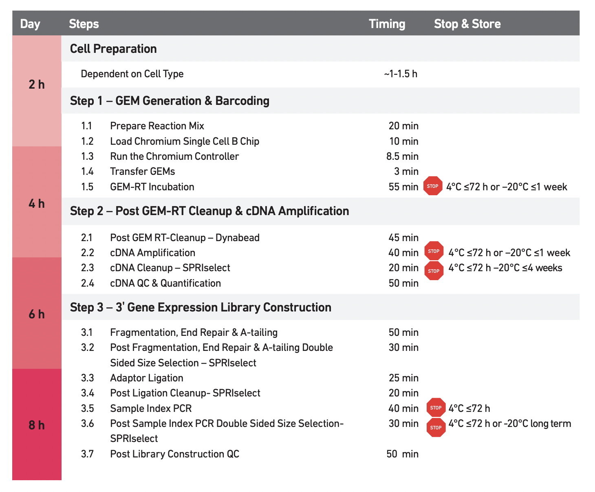

file.path = './localdata/E-MTAB-8559-quantification-raw-files/'A Living Biobank of Ovarian Cancer – Data Acqusition
Work
Omics
Useful
Paper Replication
Another scRNA paper
I was recently reading the paper “A living biobank of ovarian cancer ex vivo models reveals profound mitotic heterogeneity” (Nelson et al. 2020), which I found when looking at this dataset from the Single Cell Expression Atlas. Let’s talk about this dataset.
The Dataset
The Original Sample
We’ve previously talked extensively about protocols, but it’s also important to understand the original sample rather than just how it was processed!
Specifically, we want to know:
- Who (was sampled)
- Where (were they sampled)
- When (were they sampled)
- Why (were they sampled)1
- What (part of them was sampled)
- How many (were sampled)2
To build a living biobank, we established a biopsy pipeline, collecting samples from patients diagnosed with epithelial ovarian cancer treated at the Christie Hospital.
– “Establishing a living biobank of ovarian cancer ex vivo models” subsection, Results section, (Nelson et al. 2020)
This satisfies the where of our original question: Christie Hospital:
The Christie NHS Foundation Trust
Wilmslow Road
Manchester
M20 4BX
United Kingdom
It seems reasonable to assume that the grand majority of patients thus reside in the UK, but we’ll have to go on a Sidequest to say much more. A biopsy is when bits of you get removed to be examined clinically.
Sidequest: The Christie NHS Foundation Trust
It would be nice to say that the patients reside in the Manchester, but this is not necessarily true. The feeding area for the hopsital may be larger than that, and also if epithelial ovarian cancer is rare enough it might attract patients from further afield. What we’re interested in is catchment; the locations from which people come into the hospital. Conveniently, The Christie has catchment info on their website. It reveals that for gynaecological cancers such as epithelial ovarian cancer, 73% of the patients are from Manchester, and 97% are from the North West.
Surprisingly, the North West has an official definition:
North West England is one of nine official regions of England and consists of the administrative counties of Cheshire, Cumbria, Greater Manchester, Lancashire and Merseyside
– Wikipedia, the most trustworthy of sources
It also mostly answers the who question; patients with epithelial ovarian cancer. In the pursuit of more details, we can refer to:
Between May 2016 and June 2019, we collected 312 samples from patients with chemo-naïve and relapsed disease, either as solid biopsies or as ascites (Fig. 1a)
Ten patients had HGSOC while two had mucinous ovarian carcinoma. Longitudinal biopsies were collected from three patients.
An ascites is an abnormal abdominal buildup of fluid.
Which conveniently answers when and how many. Fig 1 in the paper provides further specificity, revealing that there are 12 patients.
We should probably find out what and why but the what is presumably just “wherever the tumour is” and for why presumably patients were included if and only if they had epithelial ovarian cancer at The Christie.
The Protocol

They used 10x Genomics Protocol CG000183 Rev A (“Chromium Single Cell 3’ Reagent Kits V3 User Guide” 2018).

In brief:
The primer contains:
an Illumina TruSeq Read 1 (read 1 sequencing primer)
16 nt 10x Barcode
12 nt unique molecular identifier (UMI)
30 nt poly(dT) sequence
Barcoded, full-length cDNA is amplified via PCR to generate sufficient mass for library construction.
Data Exploration
Now that we’ve taken a peak at the data collection details, let’s explore the actual data. I’ve downloaded the raw counts data from then Single Cell Expression Atlas.
raw.counts <- Matrix::readMM(
paste(
file.path,
'E-MTAB-8559.aggregated_filtered_counts.mtx',
sep=''
)
)dim(raw.counts)- 23284
- 19880
row.info <- read.table(
paste(
file.path,
'E-MTAB-8559.aggregated_filtered_counts.mtx_rows',
sep=''
),
header=FALSE,
col.names=c("Ensembl.ID", "Redundant")
)
if (all(row.info['Ensembl.ID'] == row.info['Redundant'])) {
# I don't understand why these datasets tend to write
# the same name twice in each row???
print("Both columns are indeed the same")
}
# Drop duplicate column
row.info <- row.info['Ensembl.ID']
head(row.info)[1] "Both columns are indeed the same"| Ensembl.ID | |
|---|---|
| <chr> | |
| 1 | ENSG00000000003 |
| 2 | ENSG00000000419 |
| 3 | ENSG00000000457 |
| 4 | ENSG00000000460 |
| 5 | ENSG00000000938 |
| 6 | ENSG00000000971 |
col.info <- read.table(
paste(
file.path,
'E-MTAB-8559.aggregated_filtered_counts.mtx_cols',
sep=''
),
header=FALSE,
sep='-',
col.names=c('Sample.Info', 'Cell.Barcode')
)
col.info['Full.ID'] <- apply(
col.info,
1, # Rows
function(row) {
paste(
row['Sample.Info'],
row['Cell.Barcode'],
sep='-'
)
})
head(col.info)| Sample.Info | Cell.Barcode | Full.ID | |
|---|---|---|---|
| <chr> | <chr> | <chr> | |
| 1 | SAMEA6492740 | AAACCCACAGTTAGGG | SAMEA6492740-AAACCCACAGTTAGGG |
| 2 | SAMEA6492740 | AAACCCACATGTGTCA | SAMEA6492740-AAACCCACATGTGTCA |
| 3 | SAMEA6492740 | AAACCCAGTCGCATGC | SAMEA6492740-AAACCCAGTCGCATGC |
| 4 | SAMEA6492740 | AAACCCAGTCTTTCAT | SAMEA6492740-AAACCCAGTCTTTCAT |
| 5 | SAMEA6492740 | AAACCCATCCGTGTCT | SAMEA6492740-AAACCCATCCGTGTCT |
| 6 | SAMEA6492740 | AAACCCATCCTCTCTT | SAMEA6492740-AAACCCATCCTCTCTT |
exp.design.table <- read.table(
'./localdata/ExpDesign-E-MTAB-8559.tsv',
header=TRUE,
sep='\t'
)We’ve loaded the data now; interestingly, the data only seems to be from 4 individuals, not 12 as previously mentioned!
unique(col.info$Sample.Info)
unique(exp.design.table$Sample.Characteristic.individual.)- 'SAMEA6492740'
- 'SAMEA6492741'
- 'SAMEA6492742'
- 'SAMEA6492743'
- '38b'
- '59'
- '74-1'
- '79'
This is because the scRNA-seq data is only one of may experiments they’ve run on their dataset:
To extend this analysis, we analysed OCMs 38b, 59, 74–1 and 79 using a 10x Genomics platform.
OCM stands for ovarian cancer models; which is the name for the cultures that we are studying.
We can also see that the data from our counts matrix is not necessarily integer, so we need to know what the counts are actually representing.
raw.counts[1:10, 1:10]10 x 10 sparse Matrix of class "dgTMatrix"
[1,] . . . . 1 . . . . .
[2,] . 1 1 . . . . . 2.0 .
[3,] . . . . . 1 . . . .
[4,] . . . . . . . . . .
[5,] . . . . . . . . . .
[6,] . . . . . . . 1 . .
[7,] . . . 1 . . . . . .
[8,] . . . . . . . . . .
[9,] . . . . . . . . . .
[10,] . 2 . . 1 . . . 0.5 .False Start: Log Transformed?
One possible answer is that these “raw” counts have been log-transformed:
Raw counts of the remaining cells were then normalised using the deconvolution-based method and then log transformed.
But the smallest base that would possibly be used would be 2, and there’s no way \(2^{2772}\) genes were observed:
max(raw.counts)
2771.9734
According to the internet, sometimes values are stated in terms of “expected counts”, since there is luck in RNA sequencing as to how easy it is to paste the reads back together. Looking into the Single Cell Expression Atlas’s section on Supplementary Information, Nelson et al. (2020) used Alevin v1.5.1 (Srivastava et al. 2019), a tool to produce estimated counts. Thus it seems reasonable to conclude that the counts represent estimated counts.
That’s all for now - next time, we’ll try to reproduce Figure 5 from the paper.
References
“Chromium Single Cell 3’ Reagent Kits V3 User Guide.” 2018. 10x Genomics. https://assets.ctfassets.net/an68im79xiti/51xGuiJhVKOeIIceW88gsQ/1db2c9b5c9283d183ff4599fb489a720/CG000183_ChromiumSingleCell3__v3_UG_Rev-A.pdf.
Nelson, Louisa, Anthony Tighe, Anya Golder, Samantha Littler, Bjorn Bakker, Daniela Moralli, Syed Murtuza Baker, et al. 2020. “A Living Biobank of Ovarian Cancer Ex Vivo Models Reveals Profound Mitotic Heterogeneity.” Nature Communications 11 (1): 822. https://doi.org/10.1038/s41467-020-14551-2.
Srivastava, A., L. Malik, T. Smith, I. Sudbery, and R. Patro. 2019. “Alevin efficiently estimates accurate gene abundances from dscRNA-seq data.” Genome Biol 20 (1): 65.